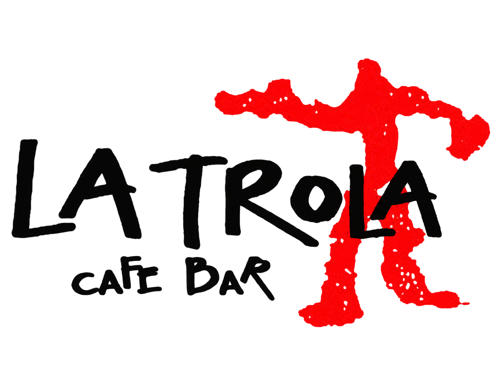
LA TROLA
Un lugar
para encontrarse
Identidad, espacio y comunicación cultural
Un café cultural en Carabanchel · 2010–2014
CARABANCHEL, MADRID
2010–2014
LA TROLA
Queríamos que apeteciera entrar
Carabanchel Bajo, Madrid · Avenida del Manzanares, 176
02
Despejamos el local y unificamos su aspecto. Buscábamos un espacio sobrio, actual y acogedor.
Con las obras del río aún en marcha, vimos la oportunidad de abrir un café cultural para el barrio.
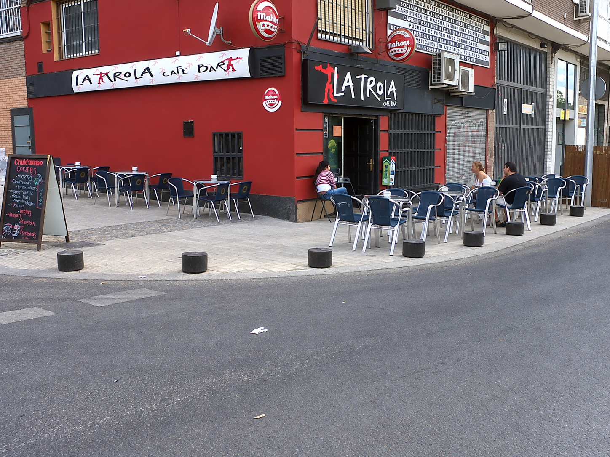
Imagen de presentación del local
LA TROLA
Una cara que recordar
El nombre y el personaje dieron forma a la identidad del lugar
03
Letra manual
La misma voz en rótulos y comunicación.
Figura roja
Un personaje que funciona con el nombre o solo.
LA TROLA
Una invitación a encontrarnos
Una tarjeta para reconocer el lugar y saber cómo llegar
04
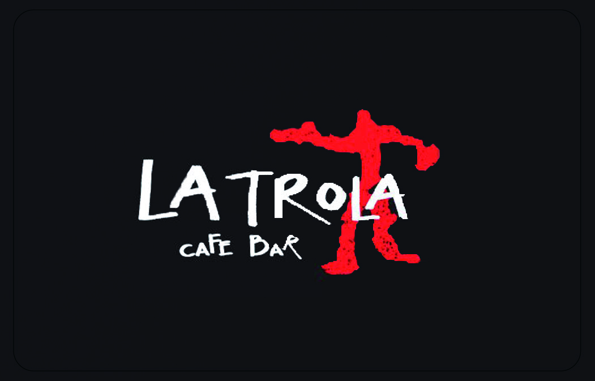
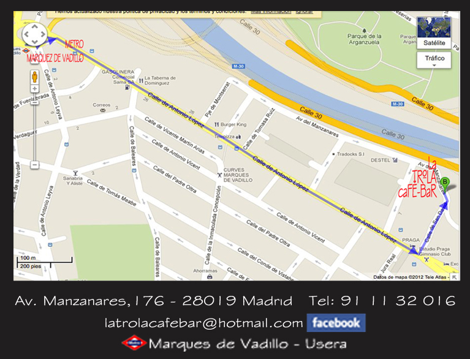
Anverso
Reverso
LA TROLA
Algo del bar se iba contigo
Navidad de 2010 y 2011. Camisetas y gorras
05
2010
Camisetas
2011
Gorras bordadas
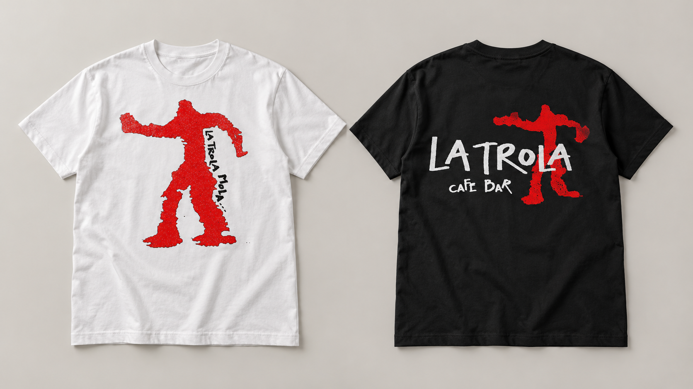
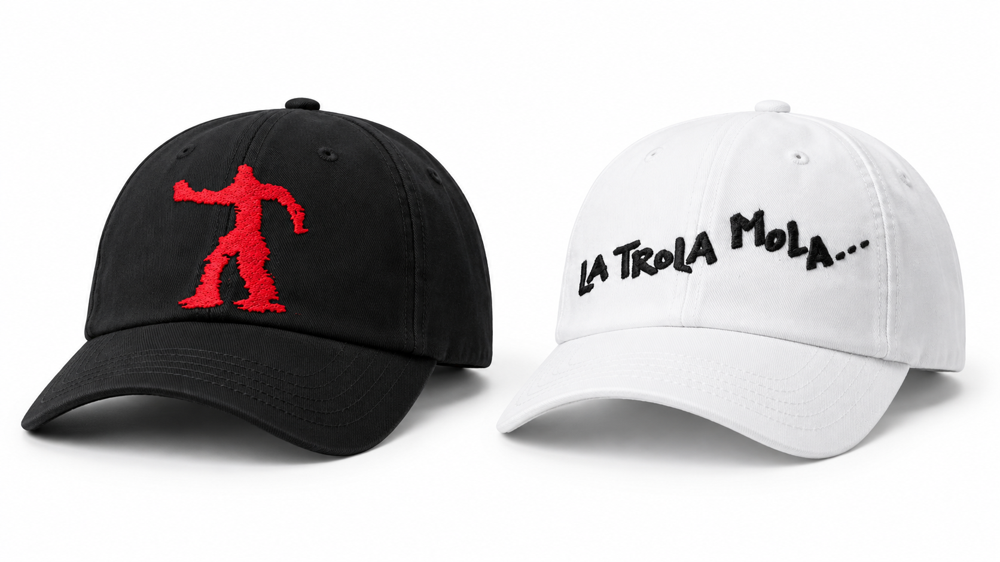
Visualización actual realizada con los diseños históricos del proyecto.
LA TROLA
La música se iba contigo
Navidad de 2012. Una selección para seguir escuchando
06
Portada y disco
Contraportada
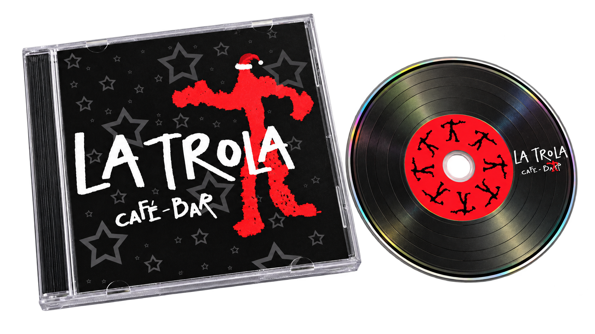
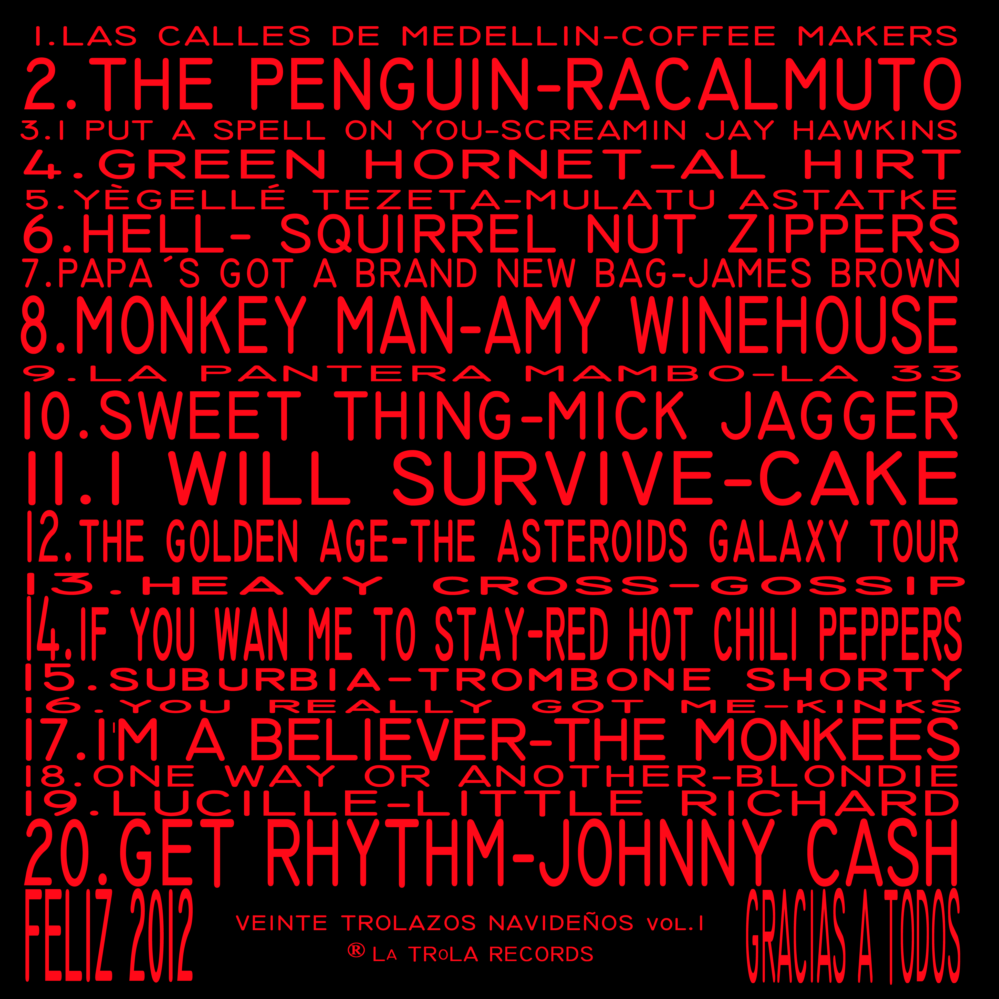
Selección musical de DJ Bongo Milongo
Visualización actual realizada con los diseños históricos del proyecto.
LA TROLA
Un regalo para brindar
Navidad de 2013. Vino blanco y tinto
07
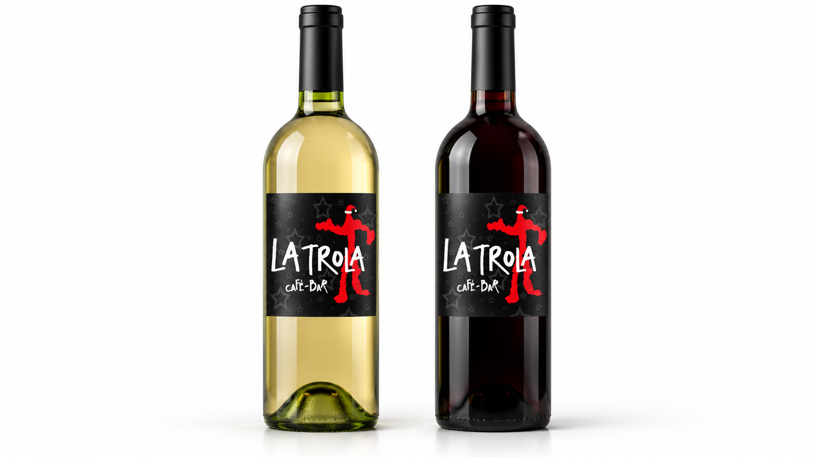
La gráfica de la edición musical continúa en las etiquetas de vino.
Visualización actual realizada con los diseños históricos del proyecto.
LA TROLA
El universo en pantalla
Imagen de perfil publicada el 2 de febrero de 2013
08
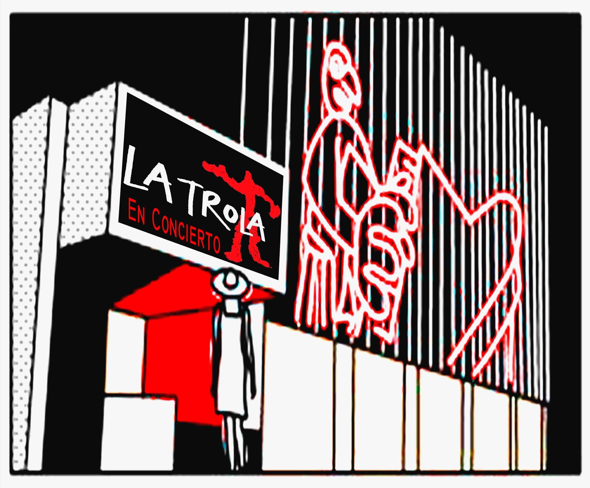
El mismo carácter en el espacio digital
La Trola Cafe-bar
@latrola.cafebar
LA TROLA
Cada mes, otra mirada
Una exposición distinta cada mes
09
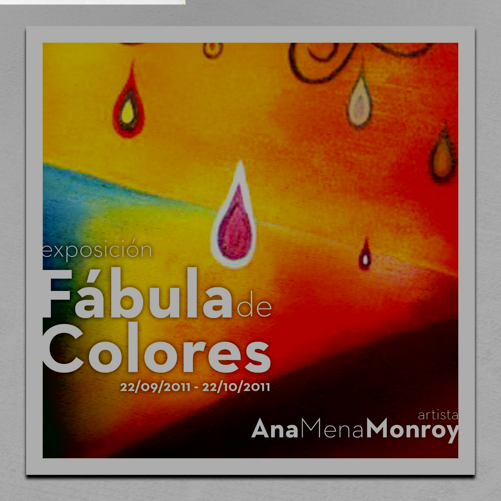
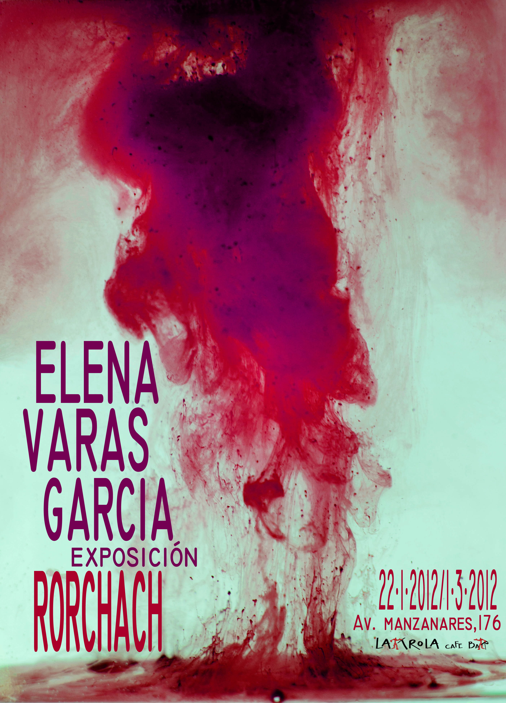
Fábula de Colores
Ana Mena Monroy
22 septiembre a 22 octubre de 2011
Rorschach
Elena Varas García
22 enero a 2 marzo de 2012
LA TROLA
LA TROLA MOLA…
Un lugar para escuchar, descubrir y encontrarse
10
La intención
Que el local resultara acogedor y que la cultura formara parte de una tarde cualquiera.
Lo que pusimos en marcha
Conciertos, exposiciones y encuentros abiertos al barrio, con una identidad que los conectaba.
Copropietaria y responsable de la dirección artística y gráfica
Carabanchel Bajo, Madrid. 2010–2014.